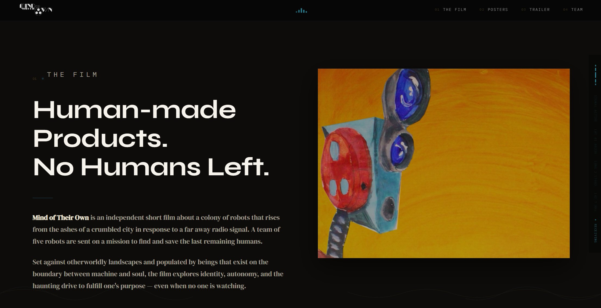
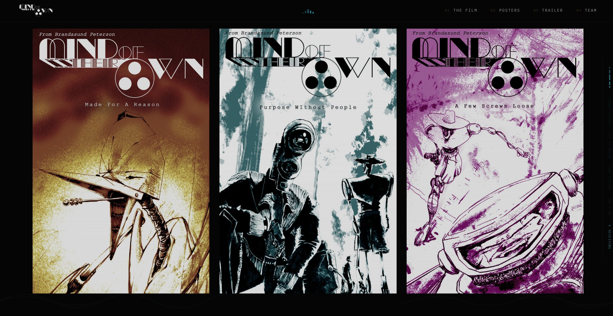
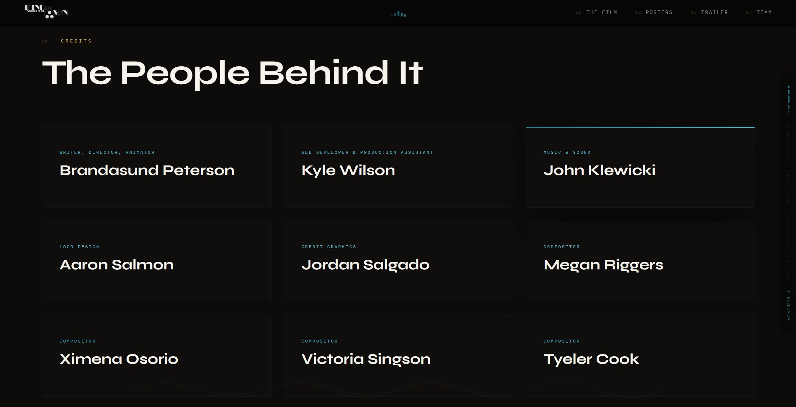

← Back to PortfolioMIND OF
Web Design · Film Promo
MIND OF
THEIR OWN
A promotional website for Brandasund Peterson's independent animated short film — robots born from the ashes of a crumbled city, searching for humanity's last survivors.
A promotional website for Brandasund Peterson's independent animated short film — robots born from the ashes of a crumbled city, searching for humanity's last survivors.
Full-screen cinematic hero with custom MOTO typography, robot character art, gold CTA buttons, and "Made For A Reason" tagline.

"Human-made Products. No Humans Left." — synopsis section with painted robot art and an overview of the film's premise.

Three original character posters — "Made For A Reason," "Purpose WIthout People," and "A Few Screws Loose" — in a cinematic triptych.

"The People Behind It" — full credit grid including Brandasund Peterson (Writer/Director/Animator), Kyle Wilson (Web Developer & Production Assistant), and the full production team.